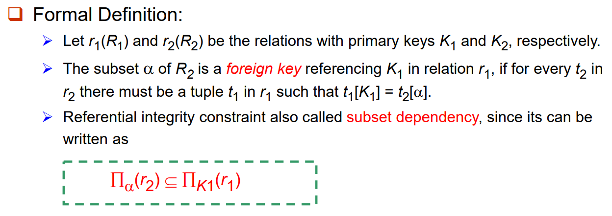
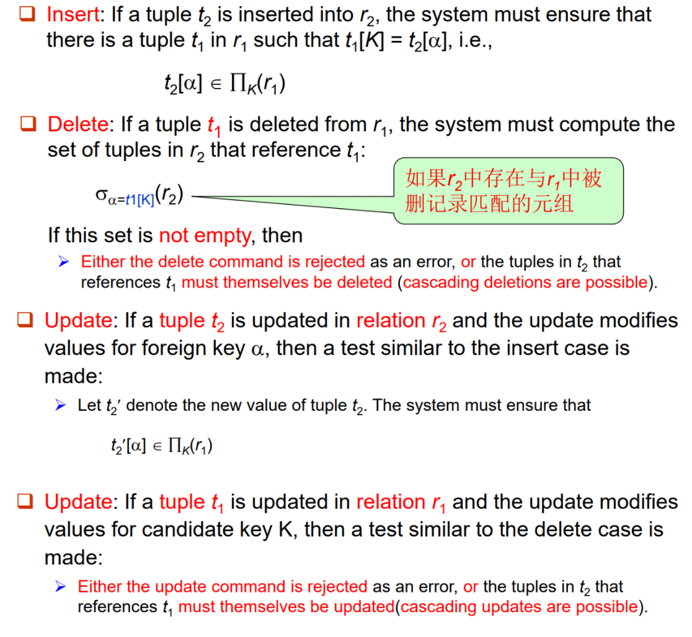
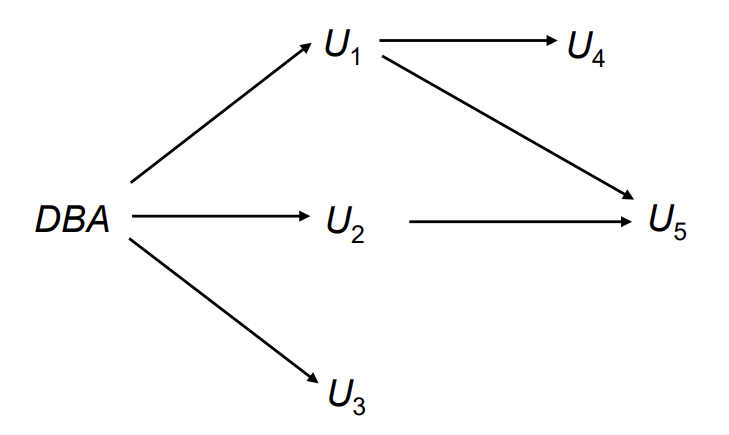
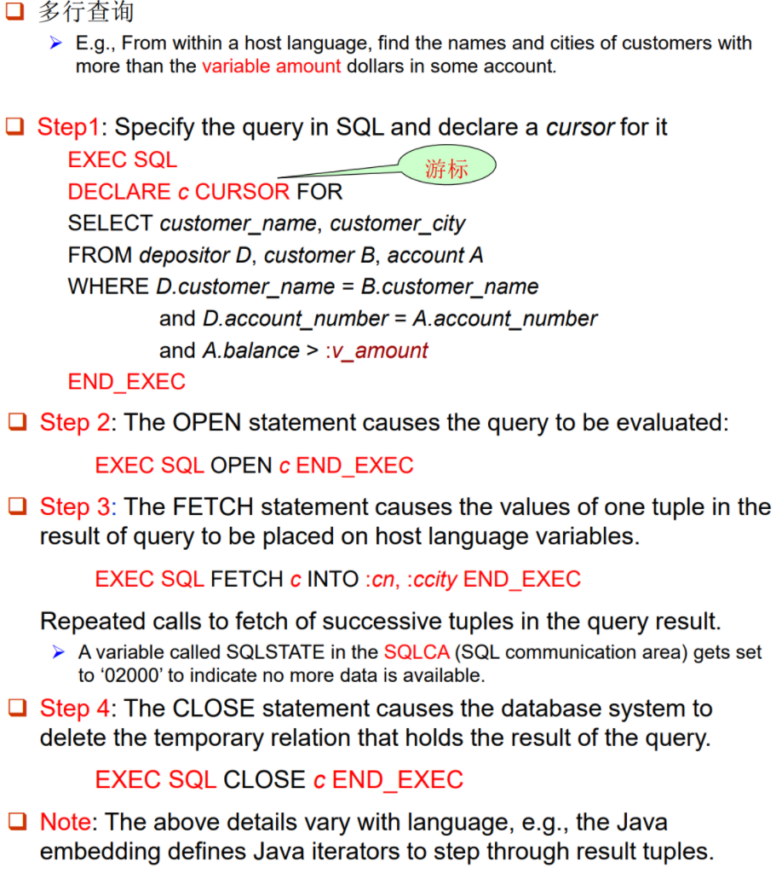

【笔记】数据库系统 (Part II)
Lecture 4. Advanced SQL
SQL Data Types and Schemas
之前提到 SQL 的关系模式（表头）schemas $R=(A_1, A_2, \cdots, A_n)$。其中属性 $A_i$ 具有定义域 $D_i$。
-
自定义 domain
1CREATE new domain 2CREATE domain Dollars AS numeric(12, 2) NOT NULL; 3CREATE domain Pounds AS numeric(12,2); 4CREATE TABLE employee 5(eno char(10) primary key, 6ename varchar(15), 7job varchar(10), 8salary Dollars, 9comm Pounds); -
Object types as domain
-
blob: binary large object – object is a large collection of uninterpreted binary data (whose interpretation is left to an application outside of the database system)
-
clob: character large object – object is a large collection of character data
-
Example
1CREATE TABLE students 2(sid char(10) primary key, 3name varchar(10), 4gender char(1), 5photo blob(20MB), 6cv clob(10KB))
-
Integrity Constraints
-
Domain Constraints
对于单个 Relation 的常见约束：
Not null,Primary key,Unique,Check (P)(where P is a predicate). -
Referential Integrity
事实上，这种约束也可以「跨表」。回顾我们之前提及的 Foreign Key：
其中 $r_1(R_1)$ 是被参照关系，$r_2(R_2)$ 是参照关系。

-
Checking Referential Integrity on Database Modification
假设我们有 $r_2(R_2) \to r_1(R_1)$ 的参照与被参照关系，为了保证此关系的始终合法，在对 $r_1(R_1)$ 或 $r_2(R_2)$ 进行修改操作时，必须同时关心另一方是否需要变动以维持该关系。

-
Referential Integrity in SQL
在 SQL 语言中，我们也可以描述这种参照与被参照关系。回顾之前的 Banking Example：

可以使用如下的 SQL 语言来描述 foreign keys：
1Create table account 2(account-number char(10), 3branch-name char(15), 4balance integer, 5primary key (account-number), 6foreign key (branch-name) references branch); 7 8Create table depositor 9(customer-name char(20), 10account-number char(10), 11primary key (customer-name, account-number), 12foreign key (account-number) references account, 13foreign key (customer-name) references customer);（btw，depositor 的 primary key 包含两个 attr）
-
Cascading Actions in SQL
1Create table account ( 2 ... 3foreign key (branch-name) references branch 4[ on delete cascade ] 5[ on update cascade ] 6... );使用
[on delete cascade]允许级联删除，使用[on update cascade]允许级联更新。之前提及，如果两表 $r_2,r_1$ 具有「参照 $\to$ 被参照」关系，当 $r_1$ 发生删除 / 更新操作时，我们可能需要相应地修改 $r_2$ 来维持此关系。
如果存在一条「参照 $\to$ 被参照」关系链，一个表的更改可能会导致链式反应。如果系统发现无法维护所有关系，它会取消本次 transaction。
-
Alternative to Cascading
除了使用级联，我们还可以这样操作：
[on delete set null][on delete set default]
这样，当被参照关系中某个 tuple 被删除时，参照关系不会随之删除，而是设置某项为 NULL。
Null values in foreign key attributes complicate SQL referential integrity semantics, and are best prevented using not null. If any attribute of a foreign key is null, the tuple is defined to satisfy the foreign key constraint!
-
Referential Integrity Example
1Create table Person 2(id char(10) primary key, 3name varchar(12) not null, 4age int, 5gender char(1), 6spouse char(10), 7foreign key(spouse) references Person 8on update cascade on delete set NULL, 9Check(gender in {‘f’, ‘m’});foreign key(spouse) references Person on update cascade on delete set NULL是一个外键约束，指定 spouse 字段引用表内部同一表的 id 字段。这意味着 spouse 必须是表中另一条记录的 id。如果某人的配偶的记录被更新（比如配偶的 id 发生变化），那么这个人的配偶信息也会相应更新（
on update cascade）。如果某人的配偶被删除，那么这个人的配偶信息会被设置为 NULL（on delete set NULL），而不是删除这条记录。
-
-
Assertion
An assertion is a predicate expressing a condition that we wish the database always to satisfy, usually for complex check condition on several relations.
SQL 格式：
1CREATE ASSERTION <assertion-name> 2 CHECK <predicate>;When an assertion is made, the system tests it for validity on every update that may violate the assertion. (when the predicate is true, it is OK, otherwise report error)
例如，对于之前的 Banking Example，要求每个分行满足其 load 总和不超过其 balance 总和。
1CREATE ASSERTION sum-constraint CHECK 2 (not exists (select * from branch B 3 where (select sum(amount) from loan 4 where loan.branch-name = B.branch-name) 5 > 6 (select sum(balance) from account 7 where account.branch-name = B.branch-name))) -
Triggers（此部分和讲义不同，按照 MySQL 的语法）
A trigger is a statement that is executed automatically by the system as a side-effect of a modification to the database.
例子：在 Banking Example 中，如果一个用户的 balance 低于 0，则为其创建 loan 账户，并将 balance 的负值设置为 amount。
1CREATE TRIGGER overdraftTrigger BEFORE UPDATE ON account 2 FOR EACH ROW 3 BEGIN 4 IF NEW.balance < 0 THEN 5 INSERT INTO borrower 6 (SELECT customer_name, account_number FROM depositor 7 WHERE NEW.account_number = depositor.account_number); 8 9 INSERT INTO loan VALUES 10 (NEW.account_number, NEW.branch_name, -NEW.balance); 11 12 SET NEW.balance = 0; 13 END IF; 14 END;loan(loan-number, branch-name, amount) borrower(customer-name, loan-number) account(account-number, branch-name, balance) depositor(customer-name, account-number)-
Trigger 触发条件
可以选用
insert/delete/update。上一个例子用的update。你也可以使用
of来规定某些 attr 被修改时才触发。例如1Create trigger overdraft-trigger 2 after update of balance on account … -
AFTER vs. BEFORE
AFTER使得 trigger 里面的内容在修改生效之后进行。BEFORE使得 trigger 里面的内容在修改生效之前进行。 -
FOR EACH ROW
可理解为遍历每一个被修改的行。
-
【FLAG】和讲义不同的点
REFERENCING语法，包括 new / old + row / table。
-
Authorization
-
Basic Authorization Types
Forms of authorization on parts of the database: （单表而言）
- Read authorization - allows reading, but not modification of data.
- Insert authorization - allows insertion of new data, but not modification of existing data.
- Update authorization - allows modification, but not deletion of data.
- Delete authorization - allows deletion of data.
Forms of authorization to modify the database schema:（整个 schema 而言）
- Index authorization - allows creation and deletion of indices.
- Resources authorization - allows creation of new relations.
- Alteration authorization - allows addition or modifying of attributes in a relation.
- Drop authorization - allows deletion of relations.
-
Authorization and Views
可以通过 Views 来限制一个用户的权限。例如，一个 clerk 只能知道每个 branch 顾客的名字，我们可以使用如下的 View：
1CREATE VIEW cust-loan as 2SELECT branchname, customer-name 3FROM borrower, loan 4WHERE borrower.loan-number = loan.loan-number同时，clerk 应当具有
SELECT该视图的权限。clerk 通过以下命令获取信息：1SELECT * 2FROM cust-loanCreation of view does not require resources authorization since no real relation is being created.
The creator of a view gets only those privileges that provide no additional authorization beyond that he already had. E.g., If creator of view cust-loan had only read authorization on borrower and loan, he gets only read authorization on cust-loan.
-
Authorization Grant Graph
The nodes of this graph are the users. The root of the graph is the database administrator.
Consider graph for update authorization on loan, then an edge $U_i \to U_j$ indicates that user $U_i$ has granted update authorization on loan to $U_j$.

Must prevent cycles of grants with no path from the root.
EXAMPLE: If DBA revokes grant from U1:
-
Grant must be revoked from U4 since U1 no longer has authorization.
-
Grant must not be revoked from U5, since U5 has another authorization path from DBA through U2.
-
-
Security Specification in SQL
接下来讲解具体在 SQL 语言中如何体现权限管理。
-
使用 GRANT 语句来赋予权限
1GRANT <privilege list> ON <table | view> 2TO <user list>例如，
GRANT select, insert ON branch TO U1, U2, U3;赋予了 U1, U2, U3 对于 branch 这张表的 select, insert 权限。注意ON后面也可以是一个视图。 -
使用 REVOKE 语句来收回权限
1REVOKE <privilege list> ON <table | view> 2FROM <user list> [restrict | cascade]About Restrict / Cascade: Revocation of a privilege from a user may cause other users also to lose that privilege, which is referred to as cascading of the revoke. With restrict, the revoke command fails if cascading revokes are required.
<privilege-list>may beALL, to revoke all privileges the revokee may hold.If
<revokee-list>includesPUBLIC, all users lose the privilege except those granted it explicitly. -
WITH GRANT OPTION 传递权限
例如，
1grant select on branch to U1 with grant option;赋予了 U1 对于 branch 的 select 权限，同时 U1 也可以对其它用户赋予该权限。
-
-
ROLES: Permitting common privileges for a class of users
例如，
1Create role teller; 2Create role manager; 3Grant select on branch to teller; 4Grant update (balance) on account to teller; 5Grant all privileges on account to manager; 6Grant teller to manager; 7Grant teller to alice, bob; 8Grant manager to avi;GRANT BY CURRENT ROLE：之前说到，用户之间可以传递权限。这个命令可以使得权限的传递是以 role 形式完成的。也就是说，如果 A 给 B 了某个权限（且没有其它人给 B 这个权限），在 A 失去权限之后 B 也会失去权限；但如果 A 是以GRANT BY CURRENT ROLE方法给出的权限，那么 B 将依然保留此权限。 -
Limitations of SQL Authorization
-
SQL does not support authorization at a tuple level.
-
The task of authorization in above cases falls on the application program, with no support from SQL.
-
With the growth in Web access to databases, database accesses come primarily from application servers.
-
Embedded SQL（嵌入式 SQL）
A language in which SQL queries are embedded is referred to as a Host language (宿主语言), and the SQL structures permitted in the host language comprise embedded SQL.

-
使用
EXEC SQL和END_EXEC来标注嵌入的部分。 -
游标 (cursor) 的作用类似于一个类。
-
:X是宿主变量，可在宿主语言程序中赋值，从而将值带入 SQL。宿主变量在宿主语言中使用时不加:号。
Lec 5. E-R Model
Introduction
-
E-R Model vs. Relation Model
顾名思义，E-R Model 引入了「实体」的概念，将部分表格归入「描述实体」的范畴。回顾之前一张 Relation Model 用过的图：
比如对于 borrower 表格，在 Relation Model 中它对应一个关系，在 E-R Model 中它也对应一个关系；但对于 customer 表格，在 Relation Model 中它对应一个关系，在 E-R Model 中它则对应一个实体。
E-R Model 更为符合语义上的直觉。